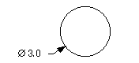

直径尺寸
预计完成这堂课需要：9–12 分钟
有很多种方法来标注圆柱特征的直径：
-
直径
 — 创建的尺寸具有两个箭头，这两个箭头指向圆或圆弧的相对两侧(内或外)。
— 创建的尺寸具有两个箭头，这两个箭头指向圆或圆弧的相对两侧(内或外)。
-
孔
 — 创建一个带单条指引线的尺寸，该指引线附着在选定的边上。
— 创建一个带单条指引线的尺寸，该指引线附着在选定的边上。
-
自动判断
 — 根据自动判断整圆的直径尺寸用户默认设置，这个选项将在您选择一个整圆边时，创建一个孔或一个直径尺寸。
— 根据自动判断整圆的直径尺寸用户默认设置，这个选项将在您选择一个整圆边时，创建一个孔或一个直径尺寸。